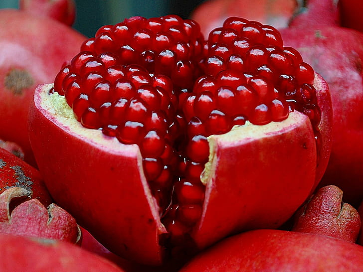

RAINBOW FRUIT FAIRs
maturity, firmness, the uniformity of size and shape, the absence of defects, skin and flesh color.

maturity, firmness, the uniformity of size and shape, the absence of defects, skin and flesh color.
Quality factors for fruits include the following— maturity, firmness, the uniformity of size and shape, the absence of defects, skin and flesh color. Many of the same quality factors are described for vegetables, with the addition of texture-related attributes such as turgidity, toughness, and tenderness.
Learn moreNagpur: Oranges. The city of Nagpur is the major producer of oranges in India and is also known as the Orange City. Himachal Pradesh: Apples. ... Goa: Cashew nuts. ... Mahabaleshwar: Strawberry. ... Allahabad: Guavas. ... Ratnagiri: Alphanso Mangoes. ... Maharashtra: Bananas. ..
Calories: 150 Protein: 1 gram Sugar: 36.5 grams Fat: 0.2 grams Carbs: 40 grams Fiber: 3.5 grams
having a cost that is not too high products sold at affordable prices an affordable purchase affordable housing
What is the importance of trees and fruit? Apart from providing you with the sheer joy of picking out fresh fruit without stepping out of your home, fruit trees can also contribute to a healthy ecosystem. Fruit trees produce fresh oxygen, giving you and your family cleaner air to breathe, as well as encouraging wildlife to flourish.